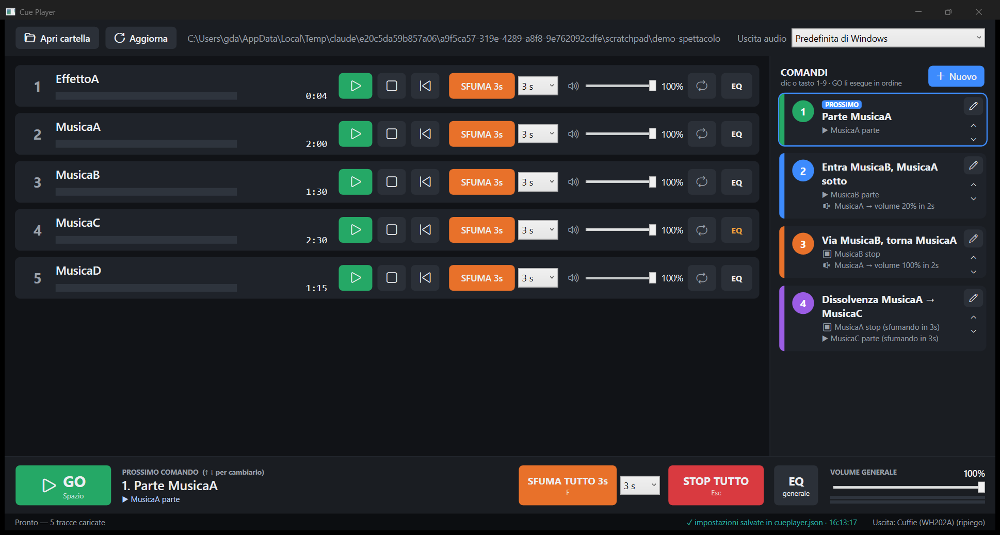
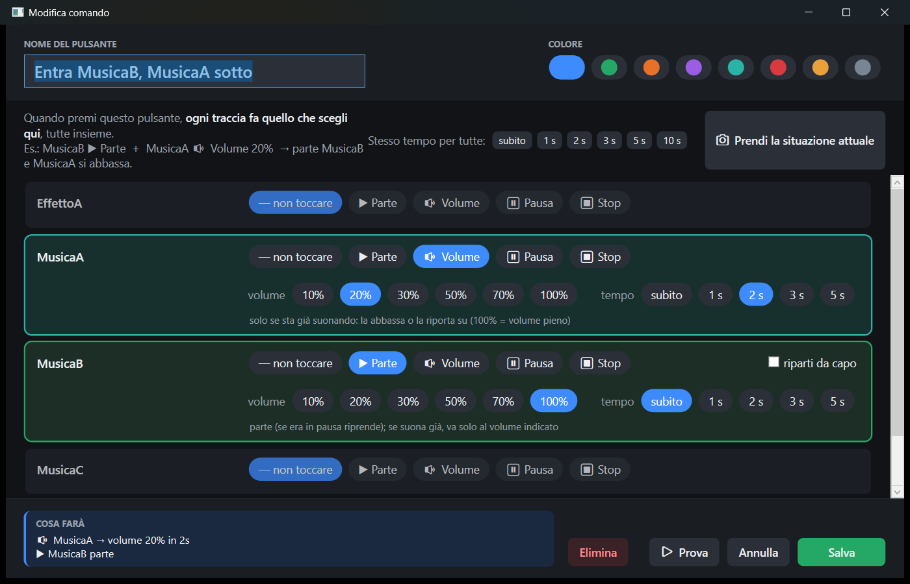
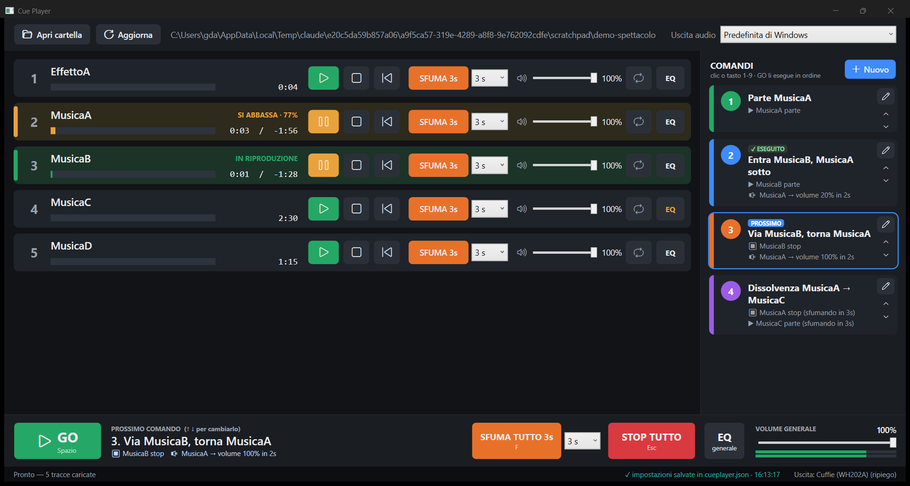
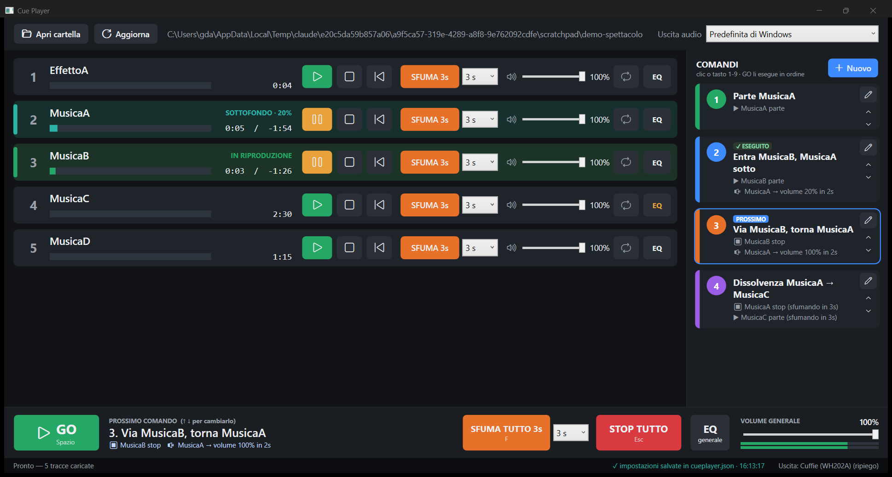
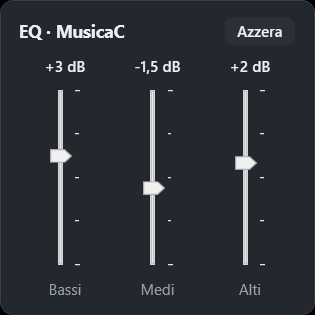

Lettore di musiche per spettacoli teatrali — Manuale d'uso
Cosa fa: fa partire, sfumare, abbassare e fermare le musiche di uno spettacolo con un clic o un tasto,
anche più musiche insieme, con pulsanti di comando che prepari tu.
Dove funziona: Windows 10 e 11. Nessuna installazione, nessuna connessione a internet.
Negli esempi le musiche si chiamano MusicaA, MusicaB, MusicaC… e
EffettoA: al loro posto ci saranno i tuoi file.
Indice
Avvio e requisiti
Preparare la cartella dello spettacolo
La schermata principale
Controlli di ogni traccia
I comandi: «premo il pulsante e succede…»
Creare e modificare un comando
Esempi pronti
Durante lo spettacolo: GO, tasti, colori
Sfumare e fermare tutto
Equalizzatore
Uscita audio
Salvataggio delle impostazioni
Prima dello spettacolo: lista di controllo
Problemi e soluzioni
1. Avvio e requisiti
Il programma è un unico file: CuePlayer.exe. Doppio clic per aprirlo. Non serve installare nulla.
Puoi tenerlo su una chiavetta USB insieme alla cartella delle musiche e usarlo su qualsiasi PC Windows 10/11.
Al primo avvio Windows può mostrare «PC protetto da Windows»: scegli Ulteriori informazioni → Esegui comunque.
Il programma riapre da solo l'ultima cartella usata.
Finché è aperto, il PC non va in sospensione e lo schermo non si spegne.
2. Preparare la cartella dello spettacolo
Crea una cartella (es. Spettacolo) e mettici dentro tutti i file audio dello spettacolo.
Le tracce compaiono in ordine di nome. Per decidere l'ordine rinominale con un numero davanti:
01_MusicaA.mp3, 02_MusicaB.mp3, 03_EffettoA.wav… (10 viene dopo 9, come in Esplora file).
Nel programma premi Apri cartella e scegli la cartella.
Se aggiungi, togli o sostituisci un file mentre il programma è aperto, l'elenco si aggiorna da solo dopo un secondo.
C'è anche il pulsante Aggiorna. Un file che non si riesce a leggere compare in rosso con la scritta «formato non leggibile».
Tutte le musiche vengono caricate in memoria all'apertura: quando premi un pulsante il suono parte subito, senza leggere dal disco.
3. La schermata principale

La schermata principale con una cartella di esempio e quattro comandi già preparati.
Zona
A cosa serve
In alto
Apri cartella, Aggiorna, percorso della cartella, scelta dell'Uscita audio.
Al centro: le tracce
Una riga per ogni file, con i controlli manuali (play/pausa, stop, sfuma, volume, loop, EQ). Servono per le prove e per intervenire a mano.
A destra: COMANDI
I tuoi pulsanti. Ognuno fa fare qualcosa a una o più tracce insieme. È il modo consigliato di gestire lo spettacolo.
In basso
GO (esegue il prossimo comando), SFUMA TUTTO, STOP TUTTO, EQ generale, Volume generale con indicatore di livello.
Barra di stato
Messaggi, conferma di salvataggio («✓ impostazioni salvate…»), uscita audio in uso.
4. Controlli di ogni traccia
Controllo
Cosa fa
▶ / ⏸
Un solo pulsante: verde = fai partire (o riprendi dalla pausa), giallo = metti in pausa. Cambia da solo in base allo stato.
⏹ Stop
Ferma la traccia e la riporta all'inizio.
⏮ Da capo
Fa ripartire la traccia dall'inizio.
SFUMA 3s + durata
Abbassa la traccia fino al silenzio nel tempo scelto nel menu accanto (1–30 s), poi la ferma.
Volume (cursore)
Volume della traccia, da 0 a 100%. Si regola anche con la rotella del mouse (2% per scatto): utile per sfumare a mano.
🔁 Loop
Acceso (blu) = la traccia ricomincia da sola quando finisce (sottofondi, effetti continui).
EQ
Equalizzatore della traccia (bassi, medi, alti). Diventa giallo se non è piatto. Vedi capitolo 10.
Barra di avanzamento
Mostra tempo trascorso e tempo mancante. Clic sulla barra = salta a quel punto.
Importante: il volume della riga è il volume «massimo» della traccia. Le percentuali dei comandi si applicano sopra
questo valore: se la riga è al 10%, un comando «volume 100%» porta la traccia al 10%. Normalmente lascia le righe al 100%.
5. I comandi: «premo il pulsante e succede…»
Un comando è un pulsante colorato nel pannello di destra. Quando lo premi, ogni traccia fa quello che hai deciso tu, tutte nello stesso istante.
Per ogni traccia puoi scegliere una di queste azioni:
Azione
Cosa succede
Si regola
— non toccare
La traccia resta com'è.
—
▶ Parte
La traccia parte. Se era in pausa riprende da dove era. Se sta già suonando non riparte: va solo al volume indicato.
volume (10…100%), tempo (subito…10 s), «riparti da capo»
🔉 Volume
Solo per una traccia che sta già suonando: la abbassa o la riporta su, senza fermarla. Se la traccia è ferma non succede nulla.
volume, tempo
⏸ Pausa
La traccia si ferma dov'è. Un successivo «▶ Parte» la fa riprendere da lì.
—
⏹ Stop
La traccia si ferma e torna all'inizio. Con un tempo > 0 sfuma prima di fermarsi.
tempo
Volume e tempo
Volume 100% = volume pieno della traccia; 20% = sottofondo leggero; 10% = appena udibile.
Tempo «subito» = cambio istantaneo. 1…10 s = il passaggio avviene gradualmente in quel tempo (sfumatura).
Quando una traccia sale e un'altra scende nello stesso comando, il programma usa una curva che mantiene il volume complessivo costante: non c'è il «buco» a metà passaggio.
6. Creare e modificare un comando
1
Nel pannello COMANDI premi + Nuovo (per modificare un comando esistente premi la matita ✎ accanto).
2
Scrivi il nome del pulsante (es. «Entra MusicaB») e scegli un colore.
3
Nell'elenco delle tracce clicca, per ognuna che deve fare qualcosa, ▶ Parte, 🔉 Volume, ⏸ Pausa o ⏹ Stop. Sotto compaiono le scelte di volume e tempo, già impostate su valori comodi (Parte: 100% subito · Volume: 20% in 2 s · Stop: subito).
4
Controlla il riquadro COSA FARÀ in basso: riassume in parole quello che succederà.
5
Prova esegue subito il comando per sentirlo. Salva lo aggiunge al pannello. Annulla chiude senza salvare. Elimina lo cancella.

Editor del comando «Entra MusicaB, MusicaA sotto»: MusicaB ▶ Parte al 100% subito, MusicaA 🔉 Volume 20% in 2 secondi.
Scorciatoie dell'editor
Stesso tempo per tutte: imposta lo stesso tempo su tutte le tracce del comando in un clic.
Prendi la situazione attuale: imposta il comando con le tracce che stanno suonando adesso, al loro volume attuale. Comodo per «fotografare» una situazione preparata a mano.
Le frecce ⌃ ⌄ accanto a ogni comando nel pannello ne cambiano l'ordine.
7. Esempi pronti
Una sequenza tipica: una musica di fondo, una seconda musica che entra mentre la prima resta sotto, poi il ritorno, poi un cambio di scena.
1 · Parte MusicaA
MusicaA ▶ Parte · 100% · subito
2 · Entra MusicaB, MusicaA sotto
MusicaB ▶ Parte · 100% · subito MusicaA 🔉 Volume · 20% · 2 s
3 · Via MusicaB, torna MusicaA
MusicaB ⏹ Stop · subito MusicaA 🔉 Volume · 100% · 2 s
4 · Dissolvenza MusicaA → MusicaC
MusicaA ⏹ Stop · 3 s MusicaC ▶ Parte · 100% · 3 s
Altri casi frequenti:
Voglio…
Imposta nel comando
fermare MusicaA e far partire subito MusicaB
MusicaA ⏹ Stop subito · MusicaB ▶ Parte 100% subito
far entrare MusicaB piano piano
MusicaB ▶ Parte 100% in 5 s
un effetto sopra la musica, senza toccarla
EffettoA ▶ Parte 100% subito (le altre: non toccare)
abbassare tutto per un dialogo e poi tornare su
comando 1: MusicaA 🔉 Volume 30% in 2 s · comando 2: MusicaA 🔉 Volume 100% in 2 s
chiudere la scena sfumando
MusicaA ⏹ Stop in 5 s
ripetere una musica dall'inizio
MusicaA ▶ Parte con «riparti da capo»
8. Durante lo spettacolo: GO, tasti, colori
GO (o la barra Spazio) esegue il comando segnato PROSSIMO e passa al successivo.
L'ultimo eseguito mostra ✓ ESEGUITO. In basso, accanto a GO, è sempre scritto quale comando partirà e cosa farà.
Se non hai creato comandi, GO fa partire una dopo l'altra le tracce dell'elenco.
Tasto
Azione
Spazio
GO: esegue il prossimo comando
1 … 9
esegue direttamente il comando con quel numero
↑↓
cambia il prossimo comando (senza comandi: la prossima traccia)
F
sfuma tutto
Esc
STOP TUTTO immediato
rotella del mouse
su un cursore di volume: ±2% per scatto; sull'EQ: ±0,5 dB
Un doppio colpo involontario di GO entro un terzo di secondo viene ignorato, così non si salta un comando per sbaglio.

Dopo il comando 2: MusicaA si abbassa (giallo) mentre MusicaB è in riproduzione (verde). Il prossimo comando è il 3.
Colori delle tracce
Colore / scritta
Significato
IN RIPRODUZIONE
suona a volume pieno
IN ENTRATA · %
sta salendo (sfumata in entrata)
SI ABBASSA · %
sta scendendo verso un volume di sottofondo
SOTTOFONDO · %
suona a volume ridotto e continua
IN SFUMATURA
sta sfumando e poi si fermerà
IN PAUSA
in pausa
rosso
file non leggibile

Qualche secondo dopo: MusicaA resta in sottofondo al 20% (verde acqua) e continua a suonare sotto MusicaB.
9. Sfumare e fermare tutto
SFUMA su una traccia: la porta al silenzio nel tempo scelto accanto e la ferma.
SFUMA TUTTO (tasto F): sfuma insieme tutte le tracce che suonano, nel tempo scelto accanto al pulsante.
STOP TUTTO (tasto Esc): ferma subito tutto. È il pulsante di emergenza.
A mano: trascina il volume della traccia o usa la rotella del mouse sopra il cursore.
Premere ▶ su una traccia che sta sfumando annulla la sfumatura e la riporta su.
10. Equalizzatore
EQ di una traccia
Pulsante EQ sulla riga: tre cursori Bassi, Medi, Alti, da −12 a +12 dB.
Serve a correggere il suono di un singolo file (es. troppo cupo, troppo acuto).
EQ generale
Pulsante EQ generale in basso: cinque bande (80 Hz, 250 Hz, 1 kHz, 3,5 kHz, 10 kHz) applicate a tutto l'audio in uscita.
Serve ad adattare il suono alla sala e all'impianto.

EQ della traccia MusicaC.
Doppio clic su un cursore = torna a 0 dB. Rotella = ±0,5 dB. Azzera = tutto piatto.
Il pulsante EQ diventa giallo quando l'equalizzatore non è piatto. A 0 dB l'EQ non modifica il suono.
Alzare molto i bassi aumenta il volume e può distorcere: spesso è meglio abbassare le altre bande.
11. Uscita audio
In alto a destra scegli la scheda audio: Predefinita di Windows oppure una specifica (altoparlanti, scheda USB, mixer).
Se l'uscita scelta non si può aprire (es. cuffie Bluetooth spente ma ancora impostate in Windows), il programma passa da solo a un'altra uscita funzionante
e in basso a destra scrive ⚠ Uscita: … (ripiego). Quando l'uscita scelta torna disponibile ci ritorna.
Se una scheda USB viene scollegata durante l'uso, il programma prova a ripristinare l'audio da solo.
Per lo spettacolo usa un'uscita via cavo (jack o scheda USB). Le cuffie e gli altoparlanti Bluetooth hanno ritardo e possono disconnettersi.
12. Salvataggio delle impostazioni
Non c'è niente da salvare a mano. Ogni modifica viene scritta dopo meno di un secondo nel file cueplayer.jsondentro la cartella delle musiche. In basso compare «✓ impostazioni salvate in cueplayer.json» con l'ora.
Vengono salvati: volume, loop, durata della sfumata ed EQ di ogni traccia; EQ generale; volume generale; durata di «Sfuma tutto»; tutti i comandi.
Riaprendo il programma ritrovi tutto com'era.
Copiando la cartella (con cueplayer.json) su un altro PC o su una chiavetta, lo spettacolo viaggia con le sue impostazioni.
Le impostazioni sono legate al nome del file: se rinomini un file, quella traccia riparte dalle impostazioni normali e i comandi che la usavano la segnano come «file mancante». Rinomina i file prima di preparare i comandi.
Se la cartella è di sola lettura (es. un CD) compare un avviso: le modifiche non si possono salvare.
13. Prima dello spettacolo: lista di controllo
Apri la cartella dello spettacolo e controlla che nessuna traccia sia rossa.
Controlla che il volume di ogni riga sia quello voluto (di solito 100%).
Scegli l'uscita audio giusta e verifica in basso a destra che non ci sia «(ripiego)».
Fai una prova completa di tutti i comandi in ordine, con GO, sull'impianto della serata.
Regola il volume generale e, se serve, l'EQ generale in sala.
Attiva in Windows «Non disturbare» (Notifiche) e disattiva i suoni di sistema.
Collega il PC alla corrente.
Prima di iniziare controlla che il PROSSIMO sia il primo comando (frecce ↑ ↓ per spostarlo).
14. Problemi e soluzioni
Problema
Cosa controllare
Non sento una traccia
Volume della sua riga (non deve essere a 0–1%); volume generale; volume di Windows; uscita audio in alto a destra.
Non sento niente
Barra in basso a destra: se c'è «Nessuna uscita audio» o «(ripiego)», scegli un'altra uscita o collega la scheda audio. L'indicatore verde sotto il volume generale si muove se il programma sta mandando suono.
Un comando «🔉 Volume» non fa niente
Agisce solo su tracce che stanno già suonando. Per far partire una traccia usa «▶ Parte».
La musica finisce troppo presto
Il file è più corto di quanto serve: attiva 🔁 Loop sulla sua riga.
Traccia in rosso
File danneggiato o formato non supportato: convertilo in MP3 o WAV.
Un comando segna «file mancante»
Il file è stato rinominato o spostato: apri il comando (✎) e scegli l'azione sulla traccia con il nome nuovo.
Ho chiuso per sbaglio
Riapri: tutte le impostazioni e i comandi sono salvati. Se c'era musica in riproduzione, il programma chiede conferma prima di chiudersi.
Errori strani
Il programma registra gli errori in %AppData%\CuePlayer\errori.log e continua a suonare.